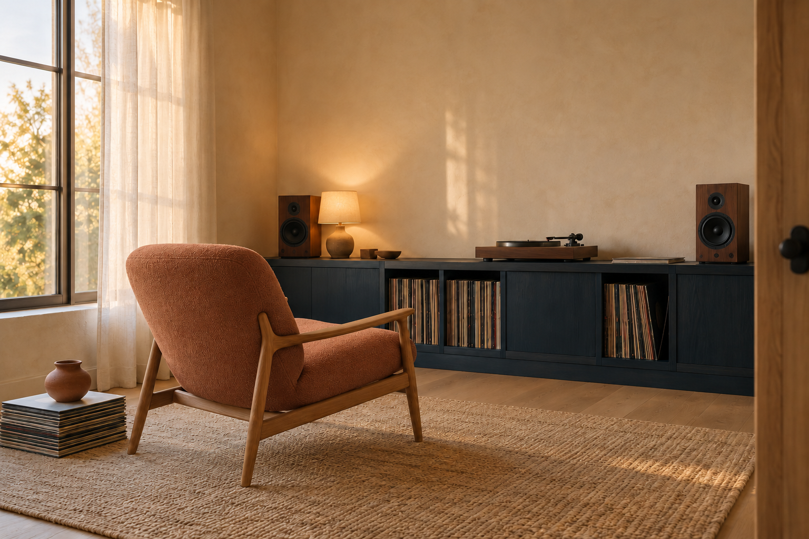

DOTSYS / VISUAL CONCEPT KIT / 01
A room for listening.
A quiet place to sit with one record, hear the small details, and let the rest of the day fall away.

Color, with a purpose.
- Warm ivory
#F4EBDDMineral walls and quiet breathing room - Ink blue
#233B48Low cabinetry grounds the room - Pale oak
#C49D70Chair frame and warm open-pore timber - Oatmeal
#D8C6A8Linen and woven rug soften the edges - Muted clay
#B96D50Wool chair upholstery, the single variation point
Materials
- Matte limewash plaster: subtle mineral variation, no high-gloss finish.
- Open-pore oak chair frame and walnut speaker/turntable surfaces: legible grain.
- Wool upholstery, sheer linen and a natural woven rug: soft, visible fibers.
- A small clay vessel adds a quiet handmade note.
Light
- Large left window, filtered by sheer linen; broad warm afternoon key.
- Soft falloff across the plaster, with grounded contact shadows.
- A small shaded lamp supports the record cabinet; avoid glare on the turntable.
Keep this direction
- Seated diagonal camera, generous unoccupied wall above the furniture.
- One lounge chair, low record cabinet, turntable and two separate speakers.
- Ink-blue cabinetry, warm plaster, timber, linen curtain, rug and vessel.
- Keep the room scale, object positions and left light when making the chair variation.
References & authorship
- Original brief and process — Hayden Lindley / Corgi-Verse direction; executed with OpenAI Codex. Original written direction; repository LICENSE/NOTICE apply to covered material.
- Original concept and controlled image edit — Built-in image tool, 2026-10-23; no exact model version exposed. AI-generated concept; no external image copied; no exclusive authorship or physical-feasibility claim.